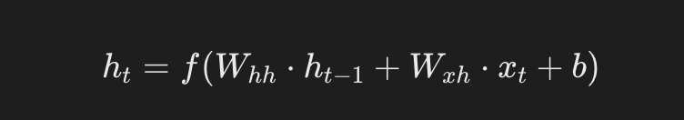
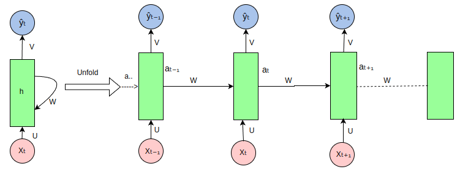
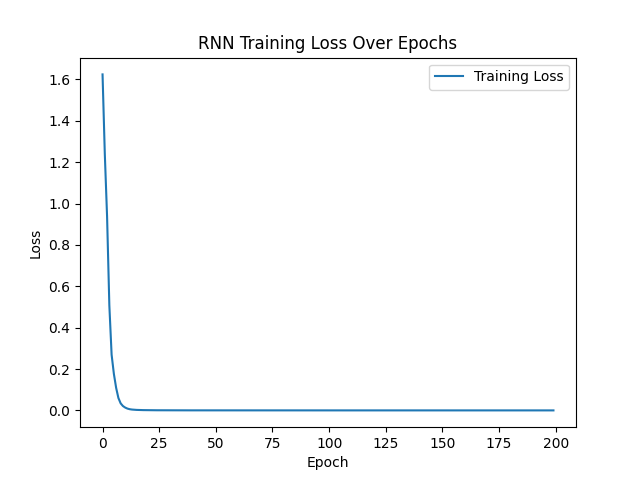

PyTorch Recurrent Neural Network (RNN)
Recurrent Neural Networks (RNN) are a class of neural network architectures specifically designed for processing sequence data. They can capture dynamic information from time series or ordered data and can handle sequence data such as text, time series, or audio.
RNN has a wide range of applications in tasks such as natural language processing (NLP), speech recognition, and time series prediction.
A key feature of RNN is its ability to maintain a hidden state, allowing the network to remember information from previous time steps, which is essential for processing sequence data.
Basic Structure of RNN
In a traditional feedforward neural network, data flows from the input layer to the output layer. In an RNN, however, data not only flows through the network layers but also propagates to the current hidden layer state at each time step, thereby passing previous information to the next time step.
Hidden State:RNN uses the hidden state to remember information in the sequence.
The hidden state is computed from the previous time step's hidden state and the current input.
The structure of the recurrent unit is as follows:
- Input (\(x_t\)): the input vector at time step \(t\).
- Hidden state (\(h_t\)): the hidden state vector at time step \(t\), used to store information from previous time steps.
- Output (\(y_t\)): the output vector at time step \(t\) (optional, depending on the specific task).
Formula:

\[ h_t = f(W_{hh}h_{t-1} + W_{xh}x_t + b_h) \]
- ht: the hidden state at the current time step.
- ht-1: the hidden state at the previous time step.
- Xt: the input at the current time step.
- Whh、Wxh: weight matrix.
- b: bias term.
- f: activation function (such as Tanh or ReLU).
Output:The output of an RNN depends not only on the current input but also on the historical information of the hidden state.
Formula:

\[ y_t = W_{hy}h_t + b_y \]
- yt: the output vector at time step t (optional, depending on the specific task).
- Why: the weight matrix from the hidden state to the output.
How RNN Handles Sequence Data
The unfolded view of a recurrent neural network (RNN) when processing sequence data is as follows:

RNN is a neural network for processing sequence data. It processes each element in the sequence through recurrent connections and passes information at each time step. The following is an explanation of each part in the figure:
-
Input sequence (Xt, Xt-1, Xt+1, ...): The pink circles in the figure represent elements in the input sequence. For example, Xt is the input at the current time step, Xt-1 is the input at the previous time step, and so on.
Hidden state (ht, ht-1, ht+1, ...): The green rectangles represent the hidden state of the RNN, which stores information about the sequence at each time step. ht is the hidden state at the current time step, ht-1 is the hidden state at the previous time step.
Weight matrices (U, W, V)：
U: The weight matrix from input to hidden state, used to transform the inputXtinto part of the hidden state.W: The weight matrix from hidden state to hidden state, used to transform the previous time step's hidden stateht-1into part of the current time step's hidden state.V: The weight matrix from hidden state to output, used to transform the hidden statehtinto the output.Yt。
Output sequence (Yt, Yt-1, Yt+1, ...): The blue circles represent the output of the RNN at each time step. For example, Yt is the output at the current time step.
Recurrent connection: A characteristic of RNN is the recurrent connection of the hidden state, which allows the network to consider information from previous time steps when processing the input at the current time step.
-
Unfold: The figure shows the unfolding process of the RNN over a sequence, which helps in understanding how the RNN processes sequence data over time. In actual RNN implementations, these steps are processed in parallel, but conceptually we can unfold it to understand how information flows.
Information flow: Information flows from the input sequence to the hidden state through the weight matrix U, then between time steps through the weight matrix W, and finally from the hidden state to the output sequence through the weight matrix V.
RNN Basics in PyTorch
In PyTorch, RNN can be used to build complex sequence models.
PyTorch provides several RNN modules, including:
torch.nn.RNN: Basic RNN cell.torch.nn.LSTM: Long Short-Term Memory (LSTM) cell, capable of learning long-term dependencies.torch.nn.GRU: Gated Recurrent Unit, a simplified version of LSTM, but usually easier to train.
When using the RNN class, you need to specify the input dimension, the hidden layer dimension, and some other hyperparameters.
PyTorch Implementing a Simple RNN Example
The following is a simple PyTorch implementation example that uses an RNN model to process sequence data and perform classification.
1. Import necessary libraries
Example
import torch.nn as nn
import torch.optim as optim
from torch.utils.data import DataLoader, TensorDataset
import numpy as np
2. Define the RNN model
Example
def __init__(self, input_size, hidden_size, output_size):
super(SimpleRNN, self).__init__()
# Define the RNN layer
self.rnn = nn.RNN(input_size, hidden_size, batch_first=True)
# Define the fully connected layer
self.fc = nn.Linear(hidden_size, output_size)
def forward(self, x):
# x: (batch_size, seq_len, input_size)
out, _ = self.rnn(x) # out: (batch_size, seq_len, hidden_size)
# Take the output of the last time step of the sequence as the model output
out = out[:, -1, :] # (batch_size, hidden_size)
out = self.fc(out) # Fully connected layer
return out
3. Create training data
To train the RNN, we generate some random sequence data. Here the goal is to use the last value of each sequence as the classification target.
Example
num_samples = 1000
seq_len = 10
input_size = 5
output_size = 2 # Assume a binary classification problem
# Randomly generate input data (batch_size, seq_len, input_size)
X = torch.randn(num_samples, seq_len, input_size)
# Randomly generate target labels (batch_size, output_size)
Y = torch.randint(0, output_size, (num_samples,))
# Create data loader
dataset = TensorDataset(X, Y)
train_loader = DataLoader(dataset, batch_size=32, shuffle=True)
4. Define loss function and optimizer
Example
model = SimpleRNN(input_size=input_size, hidden_size=64, output_size=output_size)
# Define loss function and optimizer
criterion = nn.CrossEntropyLoss() # Multi-class cross-entropy loss
optimizer = optim.Adam(model.parameters(), lr=0.001)
5. Train the model
Example
for epoch in range(num_epochs):
model.train() # Set the model to training mode
total_loss = 0
correct = 0
total = 0
for inputs, labels in train_loader:
# Forward pass
outputs = model(inputs)
loss = criterion(outputs, labels)
# Backpropagation and optimization
optimizer.zero_grad()
loss.backward()
optimizer.step()
total_loss += loss.item()
# Calculate accuracy
_, predicted = torch.max(outputs, 1)
total += labels.size(0)
correct += (predicted == labels).sum().item()
accuracy = 100 * correct / total
print(f"Epoch [{epoch+1}/{num_epochs}], Loss: {total_loss / len(train_loader):.4f}, Accuracy: {accuracy:.2f}%")
6. Test the model
After training, we can evaluate the model's performance on the test set.
Example
model.eval() # Set the model to evaluation mode
with torch.no_grad():
total = 0
correct = 0
for inputs, labels in train_loader:
outputs = model(inputs)
_, predicted = torch.max(outputs, 1)
total += labels.size(0)
correct += (predicted == labels).sum().item()
accuracy = 100 * correct / total
print(f"Test Accuracy: {accuracy:.2f}%")
7. The complete code is as follows:
Example
import torch.nn as nn
import torch.optim as optim
import matplotlib.pyplot as plt
import numpy as np
# Dataset: character sequence prediction (Hello -> Elloh)
char_set = list("hello")
char_to_idx = {c: i for i, c in enumerate(char_set)}
idx_to_char = {i: c for i, c in enumerate(char_set)}
# Data preparation
input_str = "hello"
target_str = "elloh"
input_data = [char_to_idx[c] for c in input_str]
target_data = [char_to_idx[c] for c in target_str]
# Convert to one-hot encoding
input_one_hot = np.eye(len(char_set))[input_data]
# Convert to PyTorch Tensor
inputs = torch.tensor(input_one_hot, dtype=torch.float32)
targets = torch.tensor(target_data, dtype=torch.long)
# Model hyperparameters
input_size = len(char_set)
hidden_size = 8
output_size = len(char_set)
num_epochs = 200
learning_rate = 0.1
# Define the RNN model
class RNNModel(nn.Module):
def __init__(self, input_size, hidden_size, output_size):
super(RNNModel, self).__init__()
self.rnn = nn.RNN(input_size, hidden_size, batch_first=True)
self.fc = nn.Linear(hidden_size, output_size)
def forward(self, x, hidden):
out, hidden = self.rnn(x, hidden)
out = self.fc(out) # Apply the fully connected layer
return out, hidden
model = RNNModel(input_size, hidden_size, output_size)
# Define loss function and optimizer
criterion = nn.CrossEntropyLoss()
optimizer = optim.Adam(model.parameters(), lr=learning_rate)
# Train the RNN
losses = []
hidden = None # Initial hidden state is None
for epoch in range(num_epochs):
optimizer.zero_grad()
# Forward pass
outputs, hidden = model(inputs.unsqueeze(0), hidden)
hidden = hidden.detach() # Prevent gradient explosion
# Calculate loss
loss = criterion(outputs.view(-1, output_size), targets)
loss.backward()
optimizer.step()
losses.append(loss.item())
if (epoch + 1) % 20 == 0:
print(f"Epoch [{epoch + 1}/{num_epochs}], Loss: {loss.item():.4f}")
# Test the RNN
with torch.no_grad():
test_hidden = None
test_output, _ = model(inputs.unsqueeze(0), test_hidden)
predicted = torch.argmax(test_output, dim=2).squeeze().numpy()
print("Input sequence: ", ''.join([idx_to_char[i] for i in input_data]))
print("Predicted sequence: ", ''.join([idx_to_char[i] for i in predicted]))
Code explanation:
Data preparation：
- Use the character sequence
hello, and convert it to one-hot encoding. - The target sequence is
elloh, i.e., rotate one character to the right.
- Use the character sequence
Model construction：
- Use
torch.nn.RNNCreate a recurrent neural network. - Add a fully connected layer
torch.nn.LinearUsed to map the hidden state to the output.
- Use
Training part：
- Each epoch calculates the loss and performs backpropagation.
- The hidden state is passed through
hidden.detach()to prevent gradient explosion.
Testing part：
- The model outputs the predicted character results.
Visualization：
- Use Matplotlib to plot the trend of training loss.
Assuming your model is trained well, the output might be as follows:
Epoch [20/200], Loss: 0.0013 Epoch [40/200], Loss: 0.0003 Epoch [60/200], Loss: 0.0002 Epoch [80/200], Loss: 0.0001 Epoch [100/200], Loss: 0.0001 Epoch [120/200], Loss: 0.0001 Epoch [140/200], Loss: 0.0001 Epoch [160/200], Loss: 0.0001 Epoch [180/200], Loss: 0.0001 Epoch [200/200], Loss: 0.0001 Input sequence: hello
From the results, the image shows a gradual decrease in loss, indicating that the model training is effective.
8. Visualization code:Example
import torch.nn as nn
import torch.optim as optim
import matplotlib.pyplot as plt
import numpy as np
# Dataset: character sequence prediction (Hello -> Elloh)
char_set = list("hello")
char_to_idx = {c: i for i, c in enumerate(char_set)}
idx_to_char = {i: c for i, c in enumerate(char_set)}
# Data preparation
input_str = "hello"
target_str = "elloh"
input_data = [char_to_idx[c] for c in input_str]
target_data = [char_to_idx[c] for c in target_str]
# Convert to one-hot encoding
input_one_hot = np.eye(len(char_set))[input_data]
# Convert to PyTorch Tensor
inputs = torch.tensor(input_one_hot, dtype=torch.float32)
targets = torch.tensor(target_data, dtype=torch.long)
# Model hyperparameters
input_size = len(char_set)
hidden_size = 8
output_size = len(char_set)
num_epochs = 200
learning_rate = 0.1
# Define RNN model
class RNNModel(nn.Module):
def __init__(self, input_size, hidden_size, output_size):
super(RNNModel, self).__init__()
self.rnn = nn.RNN(input_size, hidden_size, batch_first=True)
self.fc = nn.Linear(hidden_size, output_size)
def forward(self, x, hidden):
out, hidden = self.rnn(x, hidden)
out = self.fc(out) # Apply fully connected layer
return out, hidden
model = RNNModel(input_size, hidden_size, output_size)
# Define loss function and optimizer
criterion = nn.CrossEntropyLoss()
optimizer = optim.Adam(model.parameters(), lr=learning_rate)
# Train RNN
losses = []
hidden = None # Initial hidden state is None
for epoch in range(num_epochs):
optimizer.zero_grad()
# Forward propagation
outputs, hidden = model(inputs.unsqueeze(0), hidden)
hidden = hidden.detach() # Prevent gradient explosion
# Compute loss
loss = criterion(outputs.view(-1, output_size), targets)
loss.backward()
optimizer.step()
losses.append(loss.item())
if (epoch + 1) % 20 == 0:
print(f"Epoch [{epoch + 1}/{num_epochs}], Loss: {loss.item():.4f}")
# Test RNN
with torch.no_grad():
test_hidden = None
test_output, _ = model(inputs.unsqueeze(0), test_hidden)
predicted = torch.argmax(test_output, dim=2).squeeze().numpy()
print("Input sequence: ", ''.join([idx_to_char[i] for i in input_data]))
print("Predicted sequence: ", ''.join([idx_to_char[i] for i in predicted]))
# Visualize loss
plt.plot(losses, label="Training Loss")
plt.xlabel("Epoch")
plt.ylabel("Loss")
plt.title("RNN Training Loss Over Epochs")
plt.legend()
plt.show()
After execution, the displayed image is as follows:

Other extensions
Click me to share notes
<p style="font-size:14px;">Notes need to be an extension of the content of this article!</p><br> <p style="font-size:12px;"><a href="../tougao.html" target="_blank">For article submission, click here</a></p> <p style="font-size:14px;"><a href="../w3cnote/runoob-user-test-intro.html" target="_blank">How to get registration invitation code</a></p> <h3 class="text-muted"><i class="fa fa-info-circle" aria-hidden="true"></i> Before sharing notes, you must <a href=";.html" class="runoob-pop">login</a>!</h3> <p><a href="../w3cnote/runoob-user-test-intro.html" target="_blank">How to get registration invitation code</a></p>